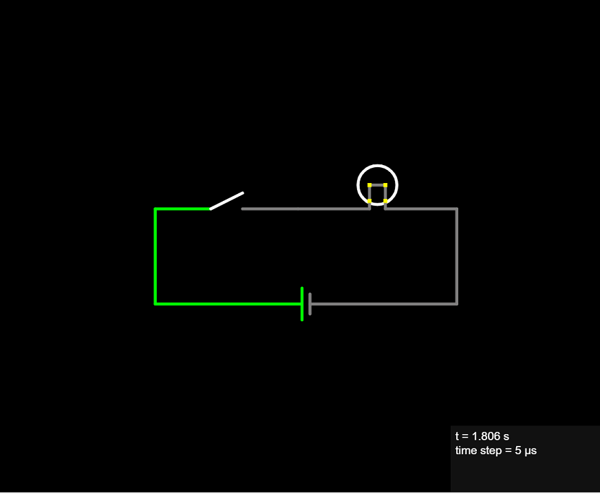
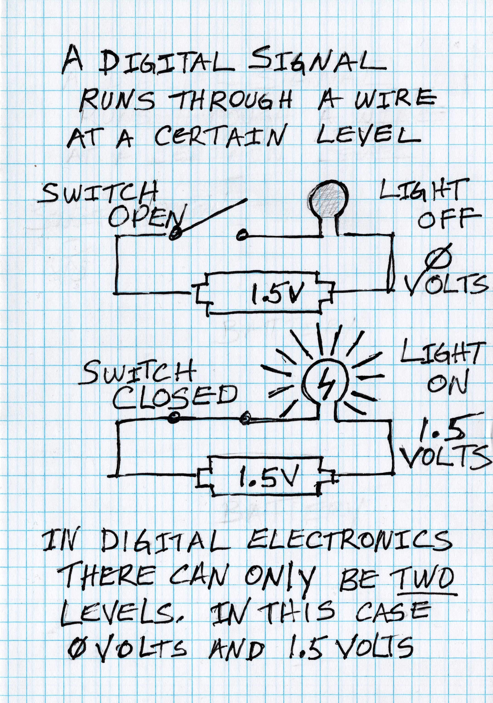
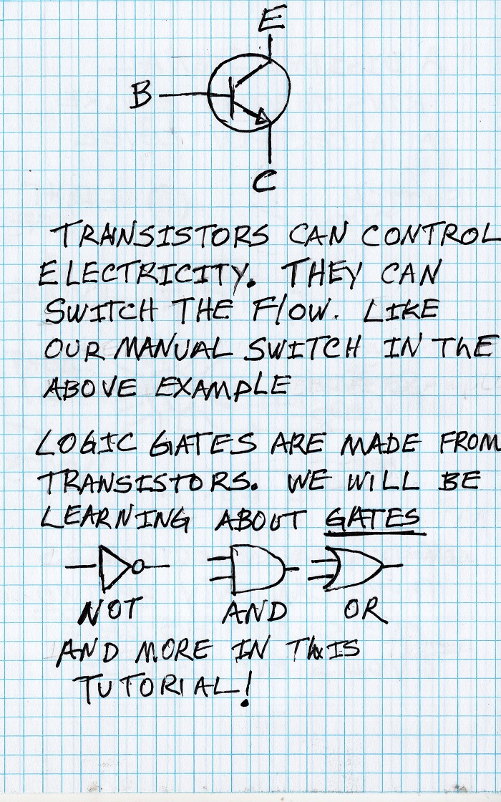
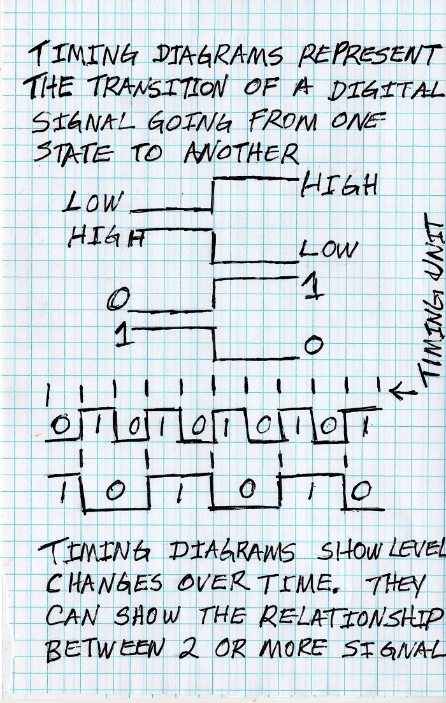

Digital Signal
Electricity is the flow of electrons. At some point you will want to learn how electricity works and the properties of it. We will get into how electricity works in depth when we cover analog electronics, but for the sake of this digital electronics tutorial all we need to know is that it works.

Digital electronics is made up of digital signals. A digital signal is electricity that runs through a wire connected to other components and a power source. That signal can only have one of two levels. In our example below the voltage level is either 0 volts (the LOW voltage) or 1.5 volts (the HIGH voltage), which is the voltage from our power source, a common AA or AAA battery. In our example the voltage is at 0 volts when the switch is open and 1.5 volts when the switch is closed.
The light bulb demonstrates the two states a digital signal can be at; either OFF or ON (or HIGH/LOW). Another way we look at this, is as a binary value. A binary value can be 0 or 1 and nothing else. In our example when the light is OFF it equals a 0 and when the light is ON it equals a 1. This is called the binary numbering system. It is what allows digital electronics to perform mathematical operations such as addition, subtraction, etc� we will cover the binary numbering system in depth later in this tutorial.

Transistors are electronic components that can control the flow of electricity. Among their many analog uses they can switch the voltage from the HIGH voltage level in a digital circuit to the LOW voltage level and back and forth.
We just briefly mention transistors since it�s important to understand that logic gates are made up of transistors that do the actual switching.

Timing diagrams are used to show transitions between high and low and back again of a signal marked by time. In the chart time flows from left to right.
Timing diagrams are devided by columns which represent a time unit. These can be expressed in any time unit.
Typically a timing diagram will display several digital signals one after another (or rows) lined up by the time columns. Therefore it is possible to show the relationships between signals. For example when one signal transitions from low to high, it might trigger another circuit to transition from high to low.
Most digital circuits are driven by a clock signal. A clock is a signal that transitions from low to high and back again which is called a clock cycle. Usually it's on a constant time period and is measured in hertz, which is clock cycles per second. More on this later in this tutorial.